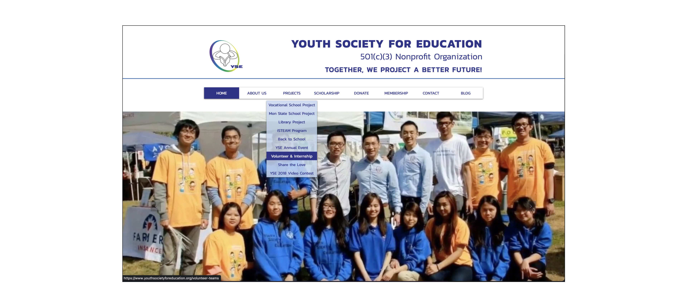
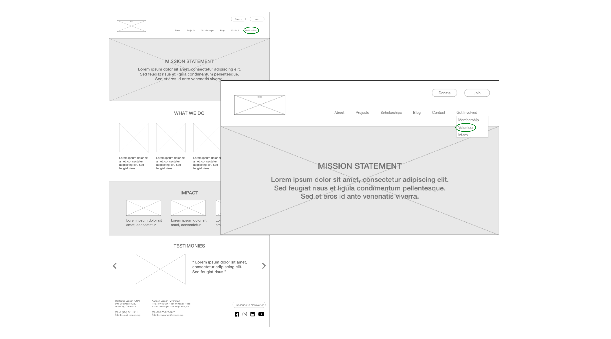
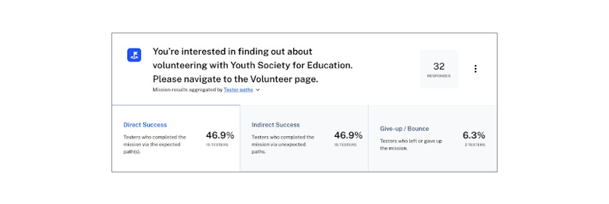
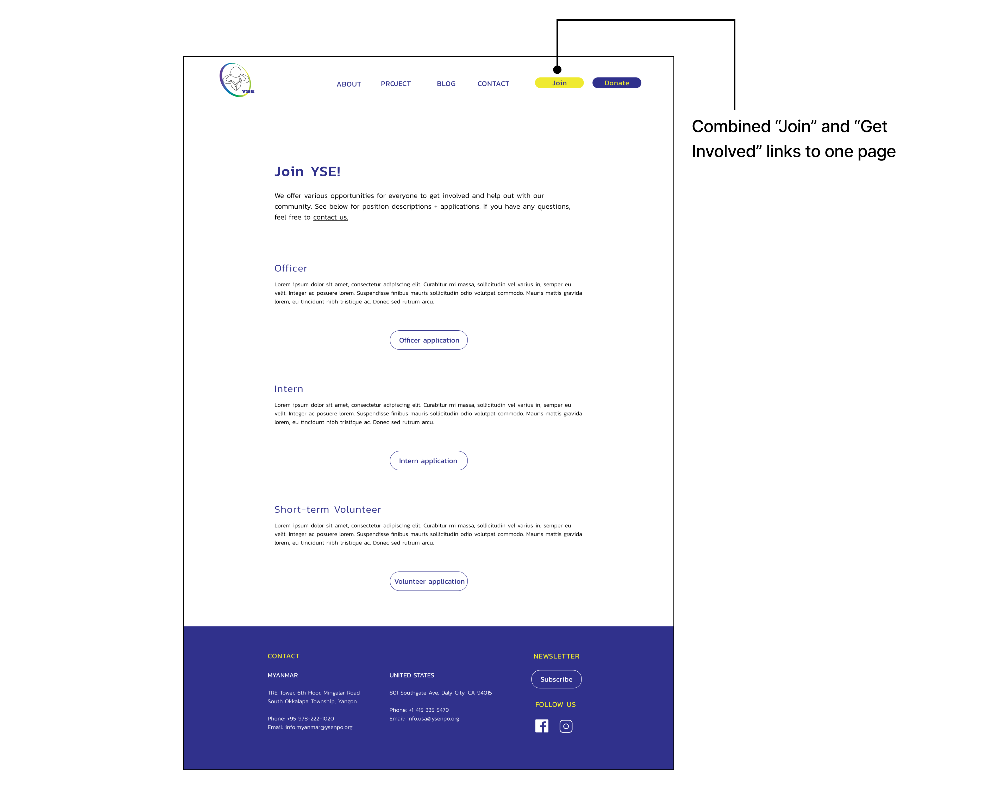

Site redesign
Improving usability to increase metrics for a non-profit.

Overview
Youth Society for Education, YSE, is a non-profit working to provide educational resources for underprivileged students. YSE reached out to UX Rescue for help with their website, which serves their branches in both Myanmar and the US. The aim of this redesign is to help increase volunteer interest and donations.
My role
I was a UX Designer on this project - personally responsible for a heuristic analysis, wireframing + prototyping, and analyzing usability testing results. I collaborated with two other designers and a few UX researchers on this project.
Discovery
Analyzing the current experience
The research team conducted a stakeholder interview to learn more about YSE and their needs as well as user interviews focused around answering how people learn about YSE, why they engage with YSE and their experience with the current website.
Meanwhile, the design team and I conducted an analysis of the current site using Jakob Nielson’s 10 usability heuristics to find areas for improvement. Some issues we found were broken links to their social media pages, inconsistent fonts & formatting, a lack of hierarchy which made certain pages feel overwhelming, and language switches between English & Burmese.
Defining our goals
After the initial interviews and the website analysis, we defined the main goals to target
with the redesign:
1. Fix usability issues and make the website more visually interesting.
2. Improve the content of the website - make sure it’s all up to date, organized, and looks professional.
3. Motivate users to get involved by highlighting
success stories and career development opportunities (since these were key motivators for current volunteers to join) and adding
clarity around donations to improve trust (a concern brought up in interviews).
Design process
Initial ideation
We wanted to restructure the website because of issues with navigation uncovered in discovery, so we started with a sitemap. After this was done, we split up the website pages between the design team and started sketching ideas. These were done on paper first and critiqued, then converted into a low-fidelity prototype.
Iterating based on user feedback
Once we had our low-fidelity prototype, we conducted unmoderated usability testing
with just over 30 users.
We particularly wanted feedback on the new architecture of the website as well as
on the improved donation and project pages.
One task given to users was to locate the volunteer page. Less than 50% of the
users were able to find this page directly, indicating that we needed to improve this:
Original placement of the volunteer page:
New placement of the volunteer page:
53% of users got stuck trying to find the volunteer page:
Change made based on findings:
The redesigned website
After making changes based on the usability testing, including the one above, we added in content + visual identity to create a high fidelity prototype. Before applying visual elements, we improved the existing YSE style guide. We defined guidelines to fix font inconsistencies and added an additional accent color, yellow - taken from YSE's logo, to make the website brighter and appear more youthful.
Results
This project was unfortunately put on hold before implementation due to issues in Myanmar at the time.
While the site isn't live, our team delivered a high fidelity prototype of the redesigned website as well as
refined design standards to stakeholders.
If this project were to continue, we'd conduct another round of testing with the high fidelity prototype,
iterate based on findings, then implement the new website + track metrics.